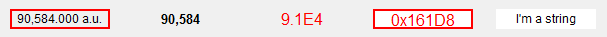

Text Update
Text Update is used to display PV value. It supports multi-line text.

Operations
In OPI editing mode, double click (or click twice) or press F2 while it is selected will make its text editable.
Press Ctrl+Enter or click other place of the display to finish editing. Press Esc to abort editing.
Special Properties
- Text (text).
- The default text of the widget. It will be replaced with PV value in Runtime.
- Format Type (format_type).
- The type of format for displaying PV value. The type of
Default
format will automatically format the PV according to its value type. Inapplicable format for
some PV types will be ignored. For example, Decimal format for a String PV will be ignored.
- Precision (precision).
- Precision of the format. This is meaningful to Default and Decimal format and
only if the property
Precision From PV is not enabled.
- Precision From PV (precision_from_pv).
- Get the precision from PV.
- Show Units (show_units).
- Show the units from PV.
- Transparent (transparent).
- Transparent backgournd.
- Auto Size (auto_size).
- Automatically adjust the size of the label according to its text.
Attention: If this is enabled, the size of the widget may subject to change when it startup in Runtime
on different platforms. This is because the fonts size on different platforms are different. To guarantee
a same or similar looking accross different platforms, it would be better to set this option off and
leave enough extra space in the label to allow potential font size change.
- Horizontal Alignment(horizontal_alignment).
- The horizontal alignment option for the place of the text
in label.
- Vertical Alignment(vertical_alignment).
- The vertical alignment option for the place of the text
in label.
- Wrap Words (wrap_words).
- Automatically wrap words. Note: This property is only
applied once during widget creation, which means it should no be changed in script or rule.
See Also